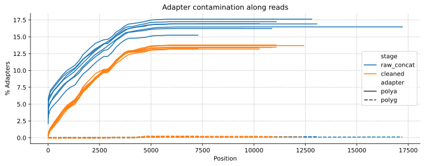
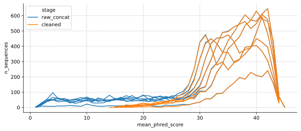

After spending some time adapting mgs-workflow to take in single-read sequencing data (see here and here), I’m now working to adapt the pipeline to take in long-read Oxford Nanopore sequencing data.
The dataset used here is based on our sequencing data, generated from swab samples collected on 2024-10-10.I’m starting with the RAW and CLEAN workflows. Outputs look as expected, but I want to compare the results with the default HTML-rendered MultiQC output.
Assessing basic stats for both raw and cleaned reads
Basic statistics look fine. The higher number of duplicates does suggest that we should make sure that deduplication is working properly in the later stages of the pipeline.
A lot of reads show polya tails. I will check in with Vanessa to see if this level of contamination is to be expected.
Code
fig, ax = plt.subplots(dpi=300, figsize=(10, 4))sns.lineplot(data=test_adapter_stats, x='position', y='pc_adapters', hue='stage', ax=ax,units="sample", style="adapter", estimator=None, legend=True)# Set common properties for both subplotsax.set_xlabel('Position')ax.set_ylabel('% Adapters')ax.grid(True, linestyle='--', alpha=0.7)# Set titles for each subplotax.set_title('Adapter contamination along reads')# Remove top and right spines for both subplotsax.spines['top'].set_visible(False)ax.spines['right'].set_visible(False)fig.tight_layout()
Figure 2.1: Adapter contamination along reads

Comparing base quality stats
Phred scores along the read look good! We have long, clean reads that reach up to 5000bp at quality scores of 35 and above.
As expected given Figure 3.1, the number of sequences with a decent average Phred score looks good. Filtlong does succesfully remove low-quality sequences, though the average quality score we are currently using is probably too low.
Code
fig, ax = plt.subplots(dpi=300, figsize=(10, 4))sns.lineplot(data=test_quality_seq_stats, x='mean_phred_score', y='n_sequences', hue='stage', ax=ax,units="sample", estimator=None, legend=True)ax.grid(True, linestyle='--', alpha=0.7)# Add horizontal lines at 200, 400, 600# for n_seq in [200, 400, 600]:# ax.axhline(y=n_seq, color='gray', linestyle='--', alpha=0.5, linewidth=1, zorder=-2)# ax.set_title('Average Phred scores of sequences')ax.spines['top'].set_visible(False)ax.spines['right'].set_visible(False)
Figure 4.1: Average Phred scores of sequences

Read lengths
After cleaning, read lengths are under 200bp are removed. There are two cleaned samples, that still show data at under 200bp. This could be an artefact of how MultiQC summarises length statistics for plotting, but it’s worth following up here by manually checking the read length data.
---title: "Testing the ONT version of mgs-workflow's RAW and CLEAN subworkflows"author: "Simon Grimm"date: 2024-12-09format: html: code-fold: true code-tools: true code-link: true df-print: paged toc: true toc-depth: 2 cap-location: bottom fig-format: svg crossref: fig-title: Figure fig-prefix: Figure chapters: truejupyter: venvtitle-block-banner: "#5cb2a0"---After spending some time adapting mgs-workflow to take in single-read sequencing data (see [here](https://data.securebio.org/simons-notebook/posts/2024-10-24-mgs-single-read-eval/) and [here](https://data.securebio.org/simons-notebook/posts/2024-10-28-mgs-taxonomy-eval/)), I'm now working to adapt the pipeline to take in long-read Oxford Nanopore sequencing data.The dataset used here is based on our sequencing data, generated from [swab samples collected on 2024-10-10](https://data.securebio.org/sampling-metadata/#:~:text=45/h-,2024%2D10%2D10,-MIT).I'm starting with the RAW and CLEAN workflows. Outputs look as expected, but I want to compare the results with the default HTML-rendered MultiQC output.```{python}#| label: data-paths#| include: falseimport osimport pandas as pdimport matplotlib.pyplot as pltimport seaborn as snstest_dir ="mgs-results/test-ont"test_output_dir = os.path.join(test_dir, "output")test_results_dir = os.path.join(test_output_dir, "results")test_basic_stats_path = os.path.join(test_results_dir, "qc_basic_stats.tsv.gz")test_adapter_stats_path = os.path.join(test_results_dir, "qc_adapter_stats.tsv.gz")test_quality_base_stats_path = os.path.join(test_results_dir, "qc_quality_base_stats.tsv.gz")test_quality_seq_stats_path = os.path.join(test_results_dir, "qc_quality_sequence_stats.tsv.gz")test_read_lengths_path = os.path.join(test_results_dir, "qc_length_stats.tsv.gz")```# Assessing basic stats for both raw and cleaned readsBasic statistics look fine. The higher number of duplicates does suggest that we should make sure that deduplication is working properly in the later stages of the pipeline.```{python}#| label: load-basic-stats#| echo: false#| include: falsetest_basic_stats = pd.read_csv(test_basic_stats_path, sep='\t')``````{python}#| label: tbl-basic-stats#| tbl-cap: Summary statistics for raw ONT readtest_basic_stats["barcode-div"] = test_basic_stats["sample"].apply(lambda x: f"{x.split('-')[-2]}-div{x.split('-')[-1].replace('div000', '')}")test_basic_stats_tbl= test_basic_stats[["barcode-div", "percent_gc", "mean_seq_len", "n_read_pairs", "percent_duplicates", "n_bases_approx", "stage"]]test_basic_stats_tbl = test_basic_stats_tbl[test_basic_stats_tbl["stage"] =="raw_concat"]test_basic_stats_tbl = test_basic_stats_tbl.drop(columns=["stage"])# Display the resulttest_basic_stats_tbl.sort_values(by="barcode-div").set_index(["barcode-div"])```# Adapter contamination stats```{python}#| label: load-adapter-stats#| echo: falsetest_adapter_stats = pd.read_csv(test_adapter_stats_path, sep='\t')```A lot of reads show polya tails. I will check in with Vanessa to see if this level of contamination is to be expected.```{python}#| label: fig-adapter-stats-comparison#| fig-cap: Adapter contamination along reads#| fig-cap-location: topfig, ax = plt.subplots(dpi=300, figsize=(10, 4))sns.lineplot(data=test_adapter_stats, x='position', y='pc_adapters', hue='stage', ax=ax,units="sample", style="adapter", estimator=None, legend=True)# Set common properties for both subplotsax.set_xlabel('Position')ax.set_ylabel('% Adapters')ax.grid(True, linestyle='--', alpha=0.7)# Set titles for each subplotax.set_title('Adapter contamination along reads')# Remove top and right spines for both subplotsax.spines['top'].set_visible(False)ax.spines['right'].set_visible(False)fig.tight_layout()```# Comparing base quality stats```{python}#| label: load-quality-base-stats#| echo: false#|test_quality_base_stats = pd.read_csv(test_quality_base_stats_path, sep='\t')```Phred scores along the read look good! We have long, clean reads that reach up to 5000bp at quality scores of 35 and above.```{python}#| label: fig-quality-base-stats-comparison#| fig-cap: Mean phred scores along the read#| fig-cap-location: topfig, ax = plt.subplots(dpi=300, figsize=(10, 4))sns.lineplot(data=test_quality_base_stats, x='position', y='mean_phred_score', hue='stage', units="sample", ax=ax,estimator=None, legend=True)# ax.set_title('Mean phred scores along reads')# Add horizontal lines at Phred scores 10, 20, 30, 40ax.grid(True, linestyle='--', alpha=0.7)# for phred in [10, 20, 30, 40]:# ax.axhline(y=phred, color='gray', linestyle='--', alpha=0.5, linewidth=1, zorder=-2)ax.spines['top'].set_visible(False)ax.spines['right'].set_visible(False)```# Comparing sequence quality stats```{python}#| label: load-quality-sequence-stats#| echo: false#| include: false#|test_quality_seq_stats = pd.read_csv(test_quality_seq_stats_path, sep='\t')print(test_quality_seq_stats["file"].unique())```As expected given @fig-quality-base-stats-comparison, the number of sequences with a decent average Phred score looks good. Filtlong does succesfully remove low-quality sequences, though the average quality score we are currently using is probably too low.```{python}#| label: fig-quality-sequence-stats-comparison#| fig-cap: Average Phred scores of sequences#| fig-cap-location: topfig, ax = plt.subplots(dpi=300, figsize=(10, 4))sns.lineplot(data=test_quality_seq_stats, x='mean_phred_score', y='n_sequences', hue='stage', ax=ax,units="sample", estimator=None, legend=True)ax.grid(True, linestyle='--', alpha=0.7)# Add horizontal lines at 200, 400, 600# for n_seq in [200, 400, 600]:# ax.axhline(y=n_seq, color='gray', linestyle='--', alpha=0.5, linewidth=1, zorder=-2)# ax.set_title('Average Phred scores of sequences')ax.spines['top'].set_visible(False)ax.spines['right'].set_visible(False)```# Read lengthsAfter cleaning, read lengths are under 200bp are removed. There are two cleaned samples, that still show data at under 200bp. This could be an artefact of how MultiQC summarises length statistics for plotting, but it's worth following up here by manually checking the read length data.```{python}#| label: load-read-lengths#| echo: false#| include: falsetest_read_lengths = pd.read_csv(test_read_lengths_path, sep='\t')``````{python}#| label: fig-read-lengths-comparison#| fig-cap: Read lengths#| fig-cap-location: topfig, ax = plt.subplots(dpi=300, figsize=(10, 4))sns.lineplot(data=test_read_lengths, x='length', y='n_sequences', hue='stage', ax=ax, units="sample", estimator=None, legend=True)ax.grid(True, linestyle='--', alpha=0.7)ax.set_xlim(0, 7500)ax.set_xlabel('Read length')ax.set_ylabel('Number of sequences')ax.spines['top'].set_visible(False)ax.spines['right'].set_visible(False)```